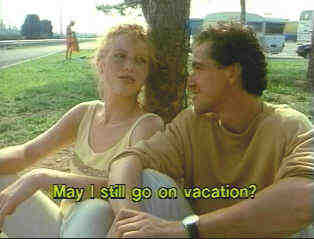

|
Vanishing, The/A, BAAA |
|
Image(Fox Lorber)/1988/102m |
The Vanishing is a concentrated and
calculated directing effort from George Sluizer. In its Spartan style, it is rather perfect, much
like a short tale from Poe, never veering from the road it has chosen. The suspense thriller is not
the typical fare American audiences have been fed on, but for the adventurous, the change of diet
will prove a gourmet feast.
A Dutch man and woman, Rex and Saskia, are vacationing through France.
Road frustrations lead to bickering and reconciliation in suspenseful fashion. At a highway service
center, the young and beautiful Saskia disappears. What has happened to her? Both the audience and
Rex find themselves in the dark together. Intercut with scenes of the vacationers, we witness
mysterious preparations by Raymond, a rather ordinary family man. How will these characters
intersect? The obsessive nature of the film demands total concentration of the viewer.
|

|
| A light moment before the darkness.
©Fox Lorber |
The story is presented as pieces of a
puzzle spread out on a table. Whichever piece you happen to pick up is the part of the story that
is being examined, until finally, the puzzle nears its obsessive completion. Just like the jigsaw
fanatic pouring over similar parts of the puzzle, unable to leave the challenge until it is
complete, the young man is obsessed with finding out the truth.
Based upon his own novel, The Golden Egg, Tim Krabbe has written
an uncompromisingly compelling screenplay. George Sluizer, who along with directing served as his
own film editor, has kept faith with Krabbe vision. He has filmed in ordinary tones and colors. The
camera witnesses the action with simplicity and directness. The unhurried pacing suits the material
perfectly, and he has extracted powerful performances from his actors.
Rex Hoffman is given the perfect blend of panic and intensity by Dutch
actor Gene Bervoets. Bernard-Pierre Donnadieu, as Raymond, compliments him perfectly, matching
intensity with the coldness of a scientist performing an experiment. Johanna Ter Steege is
appropriately innocent and alluring as Saskia.
Using the same source material as the laser edition, the DVD adds a level
of detail and cleanliness to the image that enhances the clarity of director Sluizer's vision.
While the film exhibits a fair amount of grain, this is the way it was shot and the DVD compression
successfully controls the way it looks, crucial to the feel of the film. The film is presented in a
1.33 cropped aspect ratio from what appears to be an original 1.66 composition. Though some scenes
are slightly cramped, overall the aspect ratio does not inhibit the power of the film. The sound is
thinly encoded in AC-3 one channel mono and the subtitles are easy reading yellow.
The Vanishing, a film that ranks with classics of the genre, must
be considered a collectible.
|
|

Selections from the feature archive include articles on Akira Kurosawa, Frank
Darabont, Blonde Bimbos, Hollywood
Street Gangs, or Vietnam: The Hollywood Pariah, and many more....

What actor would you vote whose screen persona best exemplified the fabric of the president of the
United States? Check act Acting Presidential for a look at the many actors
who have coveted The Oval Office.


Home of The American Film Institute.

Films of the Golden Age is
a showcase for special feature articles on film
people and Hollywood history, all illustrated with beautiful photographs and classic movie art.

News, information, features about current films in theaters and in the
pipeline. Easy to use interface.
 A huge selection of French movie
posters with images galore. Don't miss this site if you ate interested in lovely French posters. A huge selection of French movie
posters with images galore. Don't miss this site if you ate interested in lovely French posters.

The DVD Forum is an international association of hardware
manufacturers, software firms and other users of Digital Versatile Discs (the "DVD
Format"), created for the purpose of exchanging and disseminating ideas and information about
the DVD Format and its technical capabilities, improvements and innovations.

The
Movie Poster Archive include extensive poster images from the films of stars like Susan Hayward,
Kirk Douglas, Katharine Hepburn and many more. Our featured star is Robert
Mitchum
|